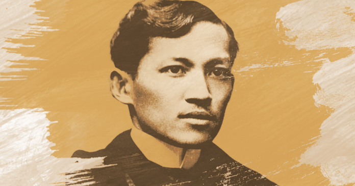

Tribute
José Protasio Rizal Mercado y Alonso Realonda

Who is Jose Rizal?
José Rizal was born on June 19, 1861, in Calamba, Philippines. While living in Europe, Rizal wrote about the discrimination that accompanied Spain's colonial rule of his country. He returned to the Philippines in 1892, but was exiled due to his desire for reform. Although he supported peaceful change, Rizal was convicted of sedition and executed on December 30, 1896, at age 35.
Noli Me Tángere
Noli Me Tángere (Latin for Touch Me Not) is a novel written by José Rizal during the colonization of the country by Spain to expose the inequities of the Spanish Catholic priests and the ruling government. Rizal depicted nationality by emphasising the positive qualities of Filipinos: the devotion of a Filipina and her influence on a man's life, the deep sense of gratitude, and the solid common sense of the Filipinos under the Spanish regime. The work was instrumental in creating a unified Filipino national identity and consciousness, as many natives previously identified with their respective regions. It lampooned, caricatured and exposed various elements in colonial society..